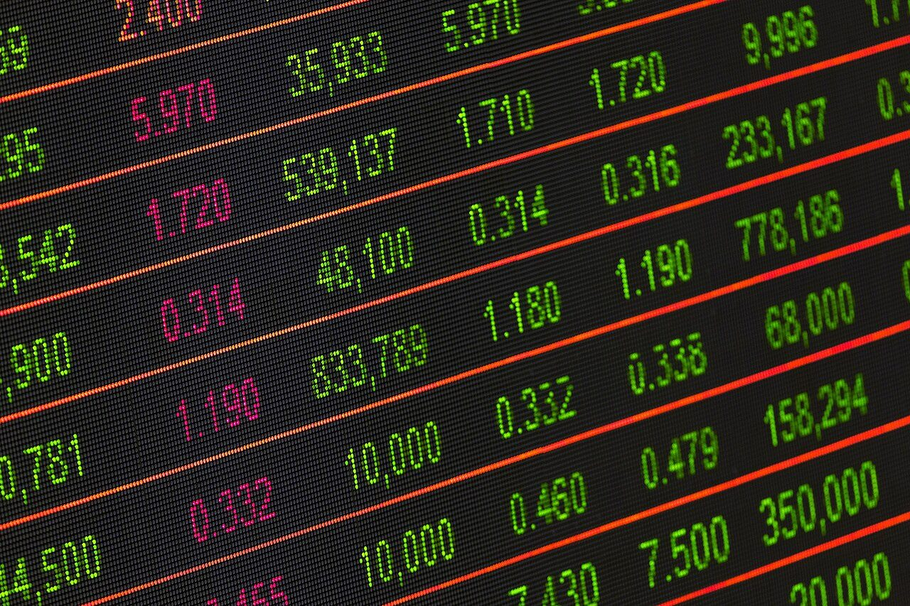
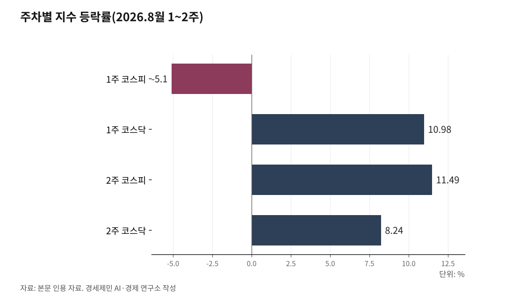

[주식공부] 코스피가 5.80% 오를 때 코스닥은 20.13% 올랐다
AI경세제민=김갑봉 기자 | 7월 31일 6595.45이던 코스피가 8월 14일 6977.94로 올랐고, 코스닥은 719.76에서 864.65로 갔다

지수를 밀어 올린 것은 기업 실적이 아니라 미국의 나쁜 고용지표였다, 7월 비농업 고용 2만3000명 감소
둘째 주에 외국인은 6조5737억원을 샀고 개인은 7조8586억원을 팔았다, 다음 2주는 금통위와 잭슨홀이 가른다
(데이터 기준시점: 2026년 8월 14일 종가 / 마지막 데이터 학습 완료일 2026년 5월 5일, 이후 웹검색 검증)
코스피가 지난 2주 동안 382.49포인트(5.80%) 올랐다. 7월 31일 6595.45에서 8월 14일 6977.94가 됐다. 같은 기간 코스닥은 144.89포인트(20.13%) 올라 719.76에서 864.65로 갔다.
지수만 보면 회복이다. 안을 열면 두 시장이 주마다 자리를 바꿨다. 첫 주에는 코스닥이 코스피를 앞섰고, 둘째 주에는 코스피가 코스닥을 앞섰다.
값을 움직인 것도 기업이 아니었다. 미국에서 고용이 무너지고 물가가 식자 금리를 올릴 확률이 내려갔고, 그 확률이 지수를 밀어 올렸다.
첫 주는 코스닥이 이겼고, 둘째 주는 코스피가 이겼다
날짜별로 보자. 코스피는 3일 5.12% 빠진 6257.45, 4일 1.62% 오른 6358.95, 5일 3.76% 오른 6598.26으로 마쳤다. 이어 6일 4.58% 빠진 6296.38, 7일 0.60% 빠진 6258.77이었다. 첫 주 낙폭은 5.10%였다.
코스닥은 거꾸로 갔다. 3일 2.44%, 4일 5.88%, 5일 2.42% 오르며 첫 주에만 10.98% 뛰었다. 코스피에 매도 사이드카가 걸린 6일에도 0.26% 올라 닷새 연속 상승했다.
둘째 주는 손이 바뀌었다. 코스피는 10일부터 14일까지 닷새 내리 올라 11.49% 뛰었고, 14일 장중 7010.86까지 올라 7월 24일 이후 처음 7000선을 되찾았다. 코스닥은 같은 닷새 8.24% 오르는 데 그쳤다.
이 갈림을 부르는 말이 순환매(循環買)다. 시장에 들어온 돈이 밖으로 빠져나가지 않고 업종만 갈아타는 흐름을 뜻한다. 지수가 내려도 오르는 업종이 있고, 지수가 올라도 내리는 업종이 있다.
6일이 그림 같았다. 반도체 업종이 8.04% 빠지는 동안 제약은 2.29%, 은행은 1.79% 올랐다. 지수가 4.58% 빠진 날에도 돈은 시장 안에 있었다.

지수를 올린 것은 실적이 아니라 나쁜 고용지표였다
미 노동부는 7일 7월 비농업 부문 고용이 2만3000명 줄었다고 발표했다. 시장 예상은 8만3000명 증가였다. 실업률은 4.1%로 내렸지만, 그 하락은 구직을 포기한 사람이 늘어난 결과였다.
숫자가 나쁘자 값이 올랐다. 미 연방준비제도가 9월에 금리를 올릴 확률이 58%에서 44%로 내려갔기 때문이다. 12일 발표된 미국 7월 소비자물가는 3.4%로 6월 3.5%보다 낮았고, 근원지수는 2.5%였다. 확률은 42%로 더 내려갔다.
13일에는 7월 생산자물가가 전월 대비 0.0%로 나왔다. 예상은 0.2% 상승이었다. 고용과 소비자물가와 생산자물가가 잇달아 예상을 밑돌자 스탠더드앤드푸어스(S&P)500지수는 13일 7798.99로 사상 최고 종가를 새로 썼다.
한국 지수도 그 확률을 따라 움직였다. 코스피는 12일 3.68%, 13일 3.56%, 14일 2.42% 올랐다. 그 사흘 동안 삼성전자도 SK하이닉스도 새 실적을 내놓지 않았다.
개인이 판 자리를 외국인이 받았다
한국거래소 집계로 10일부터 14일까지 외국인은 유가증권시장에서 6조5737억원을 순매수했다. 같은 닷새 개인은 7조8586억원을 순매도했다. 코스피는 그사이 678.28포인트(10.77%) 올랐다.
14일 하루만 봐도 같다. 외국인이 3조375억원을 사는 동안 개인은 1조9792억원, 기관은 1조314억원을 팔았다. 지수는 2.42% 올랐다.
첫 주는 정반대였다. 6일 외국인이 3조3273억원을 던지자 개인이 3조3387억원을 받아냈다. 그날 삼성전자는 6.30%, SK하이닉스는 10.37% 내렸다.
되풀이되는 그림이다. 7월 31일에도 개인은 역대 최대로 팔았고 외국인은 역대 최대로 샀다. 개인이 폭락에 받아 반등에 던진 것과 외국인이 폭락에 던져 반등에 받은 것은 같은 2주의 숫자다.
개인이 옮겨 간 자리는 코스닥이었다. 14일 코스닥에서 개인은 3153억원을 순매수했고 기관과 외국인은 각각 2531억원, 674억원을 팔았다. 대형주를 판 돈이 중소형주로 갔다.
빚도 같은 방향으로 움직였다. 금융투자협회 집계로 신용거래융자 잔액은 7월 31일 28조9350억원으로 6개월여 만에 30조원 아래로 내려왔다. 5월 사상 최고 36조5000억원대에서 7조원 넘게 줄었다. 빌린 돈이 반대매매로 정리된 자리에서 지수가 올랐다.
거시 다섯 잣대 가운데 넷이 압력을 덜었다
금리는 그대로다. 미 연방기금금리는 3.50~3.75%, 한국은행 기준금리는 2.75%다.
채권금리는 내렸다. 미국 10년물 국채금리는 14일 4.68%로 7월 31일 4.75%보다 낮다. 2년물은 4.17%였다.
물가도 내렸다. 한국 7월 소비자물가는 2.8%로 석 달 만에 2%대로 돌아왔다. 6월 3.2%보다 0.4%포인트 낮다. 석유류가 전월 대비 5.5% 내린 것이 컸다.
환율도 내렸다. 원달러 환율은 14일 1.1원 내린 1418.3원으로 주간 거래를 마쳤다. 7월 1일 1550원을 넘던 환율이 한 달 반 만에 1410원대로 왔다. 10개월 만에 가장 낮다.
유가만 갈렸다. 서부텍사스산 원유는 13일 배럴당 81.04달러(약 11만5000원)로 2.68% 내렸고, 브렌트유는 87달러대(약 12만4000원)였다. 7월 31일 브렌트유 90.12달러, 서부텍사스산 84.67달러보다 낮다. 다만 둘째 주만 놓고 보면 브렌트유는 5% 가까이 올랐다.
다음 2주는 금통위와 잭슨홀이 같은 날 열린다
17일은 장이 서지 않는다. 광복절 대체공휴일이라 유가증권시장과 코스닥시장, 채권시장, 파생상품시장이 모두 쉰다. 다음 정규장은 18일 오전 9시에 열린다.
달력은 27일에 몰려 있다. 한국은행 금융통화위원회가 그날 기준금리를 정하고, 미 캔자스시티 연방준비은행의 잭슨홀 심포지엄이 27일부터 29일까지 열린다. 올해 주제는 금융 혁신이 지급결제와 정책에 주는 함의다.
기업 쪽은 26일이다. 엔비디아가 미국 현지 26일 장 마감 뒤 2분기 실적을 내놓는다. 한국시간으로는 27일 아침이다. 인공지능 투자가 이어지는지가 국내 반도체 수급으로 곧장 넘어온다.
금통위를 보는 눈은 한 달 전과 달라졌다. 7월 16일 금리를 올릴 때 명분은 3.2% 물가와 1480원대 환율이었다. 지금 물가는 2.8%, 환율은 1418.3원이다. 명분 둘이 함께 약해졌다.
방향을 되돌릴 변수는 유가다. 미국이 이란에 호르무즈 해협 재개방을 압박하며 제재 강화를 예고했고, 브렌트유는 둘째 주에 5% 가까이 올랐다. 유가가 오르면 물가가 오르고, 물가가 오르면 금리 확률이 되돌아온다.
지난 2주 동안 삼성전자는 26만2500원에서 27만4500원으로 4.57% 올랐고, SK하이닉스는 171만8000원에서 164만5000원으로 4.25% 내렸다. 두 회사가 7월 말에 내놓은 실적은 그사이 한 줄도 바뀌지 않았다. 실적을 읽는 일과 금리 확률을 읽는 일은 지난 2주에도 다른 결과로 이어졌다.
※ 이 기사는 인공지능 프로그램 클로드 오푸스 5(Claude Opus 5)를 활용해 작성했다.
참고문헌
- U.S. Bureau of Labor Statistics, 「The Employment Situation — July 2026」, 미국 노동부 노동통계국, 2026년 8월 7일. https://www.bls.gov/news.release/archives/empsit_08072026.htm
- U.S. Bureau of Labor Statistics, 「Consumer Price Index — July 2026」, 미국 노동부 노동통계국, 2026년 8월 12일. https://www.bls.gov/news.release/archives/cpi_08122026.htm
- Federal Reserve Bank of Kansas City, 「Federal Reserve Bank of Kansas City to Host Annual Jackson Hole Economic Policy Symposium Aug. 27-29」, 캔자스시티 연방준비은행 보도자료, 2026년 8월 25일. https://www.kansascityfed.org/newsroom/2026-news-releases/kansas-city-fed-to-host-annual-jackson-hole-economic-policy-symposium-2026/
- 안호균·박광온, "7월 소비자물가 2.8%↑…석유류 안정에 2%대 복귀(종합2보)", 뉴시스, 2026년 8월 4일. https://www.newsis.com/view/NISX20260804_0003735644
- 강기훈, "외국인 3.3조원 '매물 폭탄'…반도체 급락에 코스피 4.6%↓", 디지털데일리, 2026년 8월 6일. https://m.ddaily.co.kr/page/view/2026080616092783817
- "롤러코스피에 개미 청산랠리…'빚투' 이틀 새 4.7조 급감", 머니투데이방송(MTN), 2026년 8월 4일. https://news.mtn.co.kr/news-detail/2026080416155599328
- "뉴욕증시, 생산자물가 둔화·유가 하락에 상승…S&P500 사상 최고[뉴욕마감]", 머니투데이방송(MTN), 2026년 8월 14일. https://news.mtn.co.kr/news-detail/2026081405465685595
- "\"외인 돈 푼다\" 3조 넘게 순매수...7000피 찍고 일부 반납, 6970대 마감", 머니투데이, 2026년 8월 14일. https://www.mt.co.kr/stock/2026/08/14/2026081415441735876
사진 출처
· [대표사진] AhmadArdity, "Stockmarket.jpg", 위키미디어 공용, CC0, https://commons.wikimedia.org/wiki/File:Stockmarket.jpg
※ 이 기사는 인공지능을 활용해 작성했습니다.
관련기사
- [주식공부] 사상 최대 실적 낸 이틀은 내렸고, 헤지펀드 청산 뒤 17.91% 올랐다
- [주식공부] 코스피 18.45% 하락, 반등을 받친 건 자사주
- 코스피 7월에 21.07% 빠졌다, 나스닥은 4.72% 빠졌다
- [주식공부] 코스피 하루 만에 4.46% 빠지고 3.56% 반등…이틀 사이 사이드카가 방향을 뒤집었다
저작권자 © AI경세제민 무단전재 및 재배포, AI학습 및 활용 금지